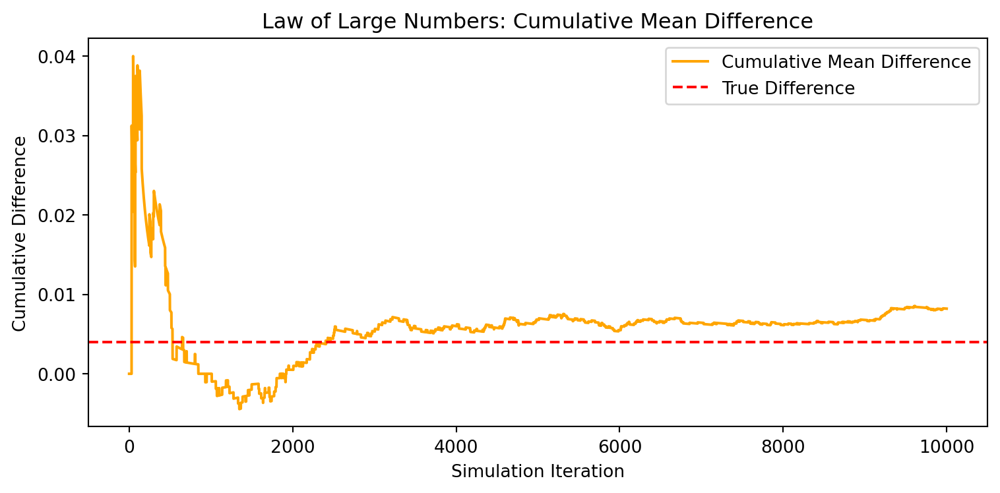

| Variable | Data Type | Missing (%) | |
|---|---|---|---|
| treatment | treatment | int8 | 0.00 |
| control | control | int8 | 0.00 |
| ratio | ratio | category | 0.00 |
| ratio2 | ratio2 | int8 | 0.00 |
| ratio3 | ratio3 | int8 | 0.00 |
| size | size | category | 0.00 |
| size25 | size25 | int8 | 0.00 |
| size50 | size50 | int8 | 0.00 |
| size100 | size100 | int8 | 0.00 |
| sizeno | sizeno | int8 | 0.00 |
| ask | ask | category | 0.00 |
| askd1 | askd1 | int8 | 0.00 |
| askd2 | askd2 | int8 | 0.00 |
| askd3 | askd3 | int8 | 0.00 |
| ask1 | ask1 | int16 | 0.00 |
| ask2 | ask2 | int16 | 0.00 |
| ask3 | ask3 | int16 | 0.00 |
| amount | amount | float32 | 0.00 |
| gave | gave | int8 | 0.00 |
| amountchange | amountchange | float32 | 0.00 |
| hpa | hpa | float32 | 0.00 |
| ltmedmra | ltmedmra | int8 | 0.00 |
| freq | freq | int16 | 0.00 |
| years | years | float64 | 0.00 |
| year5 | year5 | int8 | 0.00 |
| mrm2 | mrm2 | float64 | 0.00 |
| dormant | dormant | int8 | 0.00 |
| female | female | float64 | 2.22 |
| couple | couple | float64 | 2.29 |
| state50one | state50one | int8 | 0.00 |
| nonlit | nonlit | float64 | 0.90 |
| cases | cases | float64 | 0.90 |
| statecnt | statecnt | float32 | 0.00 |
| stateresponse | stateresponse | float32 | 0.00 |
| stateresponset | stateresponset | float32 | 0.00 |
| stateresponsec | stateresponsec | float32 | 0.01 |
| stateresponsetminc | stateresponsetminc | float32 | 0.01 |
| perbush | perbush | float32 | 0.07 |
| close25 | close25 | float64 | 0.07 |
| red0 | red0 | float64 | 0.07 |
| blue0 | blue0 | float64 | 0.07 |
| redcty | redcty | float64 | 0.21 |
| bluecty | bluecty | float64 | 0.21 |
| pwhite | pwhite | float32 | 3.73 |
| pblack | pblack | float32 | 4.07 |
| page18_39 | page18_39 | float32 | 3.73 |
| ave_hh_sz | ave_hh_sz | float32 | 3.72 |
| median_hhincome | median_hhincome | float64 | 3.74 |
| powner | powner | float32 | 3.73 |
| psch_atlstba | psch_atlstba | float32 | 3.73 |
| pop_propurban | pop_propurban | float32 | 3.73 |
A Replication of Karlan and List (2007)
Introduction
Dean Karlan at Yale and John List at the University of Chicago conducted a field experiment to test the effectiveness of different fundraising letters. They sent out 50,000 fundraising letters to potential donors, randomly assigning each letter to one of three treatments: a standard letter, a matching grant letter, or a challenge grant letter. They published the results of this experiment in the American Economic Review in 2007. The article and supporting data are available from the AEA website and from Innovations for Poverty Action as part of Harvard’s Dataverse.
The experiment by Karlan and List was designed to test how different types of matching donations affect individuals’ likelihood to give. Using a large-scale natural field experiment, they sent fundraising letters to over 50,000 previous donors of a politically oriented nonprofit organization. These letters were randomly assigned to different treatment groups, with variations in the match ratio ($1:$1, $2:$1, $3:$1), match cap ($25K, $50K, $100K, or unstated), and suggested donation amount (based on prior giving).
The results showed that offering a matching donation significantly increased both response rates and donation amounts, but surprisingly, higher match ratios did not yield higher contributions. Furthermore, the treatment effects were found to be stronger in politically conservative (red) states.
This replication will use the provided dataset to reproduce the main findings of their study and visualize key trends from the original experiment.
This project seeks to replicate their results.
Data
Description
This dataset includes 50,083 observations from a field experiment conducted by Karlan and List (2007). Each observation represents a previous donor to a liberal nonprofit organization in the U.S., who received a fundraising letter with randomized treatments. The variables cover experimental assignments (e.g., matching ratios and amounts), donation responses, and background characteristics such as donation history, gender, and zip-code–level census data.
Balance Test
As an ad hoc test of the randomization mechanism, I provide a series of tests that compare aspects of the treatment and control groups to assess whether they are statistically significantly different from one another.
As a check on the randomization mechanism, we compare several pre-treatment covariates between the treatment and control groups. We use t-tests and linear regressions to test whether the differences are statistically significant.
T-Test Results for Selected Variables
| t-statistic | p-value | |
|---|---|---|
| Variable | ||
| years | -1.091 | 0.2753 |
| freq | -0.111 | 0.9117 |
| female | -1.754 | 0.0795 |
| couple | -0.582 | 0.5604 |
| hpa | 0.970 | 0.3318 |
| amountchange | 0.471 | 0.6374 |
Balance Check via Linear Regression
| Treatment Coef | p-value | |
|---|---|---|
| Variable | ||
| years | -0.058 | 0.2700 |
| freq | -0.012 | 0.9117 |
| female | -0.008 | 0.0787 |
| couple | -0.002 | 0.5594 |
| hpa | 0.637 | 0.3451 |
| amountchange | 6.331 | 0.5982 |
Why include this in the paper?
This type of balance table—commonly shown as Table 1 in field experiment papers—helps build confidence in the internal validity of the study. It reassures readers that any observed treatment effects are likely due to the intervention, not pre-existing differences.
Experimental Results
Charitable Contribution Made
First, I analyze whether matched donations lead to an increased response rate of making a donation.
We examine whether offering a matching grant increases the likelihood of making a charitable donation.
1. Barplot – Proportion of People Who Donated

2. T-Test and Linear Regression
| Test | t-statistic | p-value | |
|---|---|---|---|
| 0 | T-test | 3.209 | 0.0013 |
| Coef. | Std.Err. | t | P>|t| | [0.025 | 0.975] | |
|---|---|---|---|---|---|---|
| Intercept | 0.017858 | 0.001101 | 16.224643 | 4.779032e-59 | 0.015701 | 0.020016 |
| treatment | 0.004180 | 0.001348 | 3.101361 | 1.927403e-03 | 0.001538 | 0.006822 |
This corresponds to Table 2a, Panel A of Karlan & List (2007), where the estimated treatment effect on donation probability is also positive and statistically significant.
3. Probit Regression (Replicating Table 3, Column 1)
Optimization terminated successfully.
Current function value: 0.100443
Iterations 7| Coef. | Std.Err. | z | P>|z| | [0.025 | 0.975] | |
|---|---|---|---|---|---|---|
| Intercept | -2.100141 | 0.023316 | -90.07277 | 0.000000 | -2.145840 | -2.054443 |
| treatment | 0.086785 | 0.027879 | 3.11293 | 0.001852 | 0.032143 | 0.141426 |
These results replicate Table 3, Column 1 in Karlan & List (2007), which shows that treatment assignment increases the likelihood of donating.
Differences between Match Rates
Next, I assess the effectiveness of different sizes of matched donations on the response rate. Assessing the effect of different matching ratios (1:1 vs 2:1 vs 3:1) on donation likelihood
1. Visual Comparison of Donation Rates by Match Ratio
| Comparison | t-stat | p-value | |
|---|---|---|---|
| 0 | 2:1 vs 1:1 | 2.220 | 0.0265 |
| 1 | 3:1 vs 1:1 | 2.277 | 0.0228 |

2. Linear Regression with Match Ratio Indicators
| Coef. | Std.Err. | t | P>|t| | [0.025 | 0.975] | |
|---|---|---|---|---|---|---|
| Intercept | 0.019015 | 0.000852 | 22.305645 | 1.117192e-109 | 0.017344 | 0.020686 |
| ratio2 | 0.003618 | 0.001595 | 2.269174 | 2.326199e-02 | 0.000493 | 0.006744 |
| ratio3 | 0.003718 | 0.001595 | 2.331529 | 1.972942e-02 | 0.000592 | 0.006844 |
3. Calculate Differences in Predicted Probabilities
| Match Ratio | Donation Rate | |
|---|---|---|
| 0 | 1:1 | 0.019015 |
| 1 | 3:1 | 0.022733 |
| 2 | 2:1 | 0.022633 |
Size of Charitable Contribution
In this subsection, I analyze the effect of the size of matched donation on the size of the charitable contribution.
1. Linear Regression on Full Sample
| Coef. | Std.Err. | t | P>|t| | [0.025 | 0.975] | |
|---|---|---|---|---|---|---|
| Intercept | 0.813268 | 0.067418 | 12.062995 | 1.843438e-33 | 0.681127 | 0.945409 |
| treatment | 0.153605 | 0.082561 | 1.860503 | 6.282029e-02 | -0.008216 | 0.315426 |
2. Regression on Positive Donors Only
| Coef. | Std.Err. | t | P>|t| | [0.025 | 0.975] | |
|---|---|---|---|---|---|---|
| Intercept | 45.540268 | 2.423378 | 18.792063 | 5.473578e-68 | 40.784958 | 50.295579 |
| treatment | -1.668393 | 2.872384 | -0.580839 | 5.614756e-01 | -7.304773 | 3.967986 |
3. Histogram of Donation Amounts (Conditioned on Giving)

Simulation Experiment
As a reminder of how the t-statistic “works,” in this section I use simulation to demonstrate the Law of Large Numbers and the Central Limit Theorem.
Suppose the true distribution of respondents who do not get a charitable donation match is Bernoulli with probability p=0.018 that a donation is made.
Further suppose that the true distribution of respondents who do get a charitable donation match of any size is Bernoulli with probability p=0.022 that a donation is made.
Law of Large Numbers

Central Limit Theorem

Conclusion
In this project, I replicate and explore findings from Karlan and List (2007), who conducted a large-scale natural field experiment to test whether and how charitable giving responds to matching donations.
My analysis confirms their key result: simply offering a matching grant significantly increases the likelihood that an individual donates. However, consistent with the paper’s findings, I also find that increasing the match ratio beyond 1:1 (to 2:1 or 3:1) does not lead to higher response rates or larger donations. This suggests that the psychological nudge of a match offer—rather than its financial magnitude—drives behavior.
Furthermore, while treatment boosts average donation amounts on the full sample, this effect disappears when conditioning on those who gave. This indicates that matching primarily operates on the extensive margin (whether to give), not the intensive margin (how much to give).
Through simulation, I also illustrate the Law of Large Numbers and the Central Limit Theorem, showing how statistical inference allows us to draw valid conclusions from randomized experiments.
Taken together, these results highlight the power of simple behavioral interventions—like a matching message—to shape real-world decision making. At the same time, they reinforce the importance of rigorous experimental design and replication for understanding causal effects in charitable and policy-relevant settings.